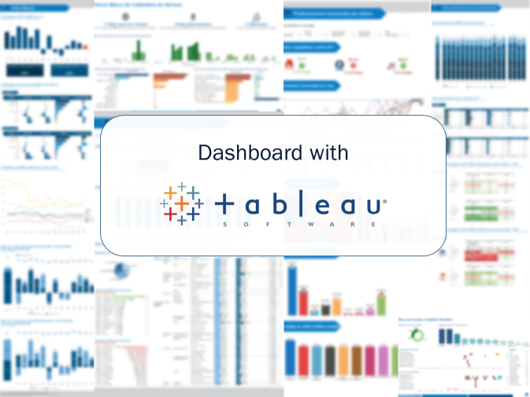

Job Description
Integrated data visualization tools and applied a data oriented organization
Senior Consultant
Project: L’Occitane – Advised on the best used of TableauInterlocutors: Business Intelligence Department
• Collected business needed and proposed new business analysis axis
• Simplified the monitoring of the server
• Prepared data in SQL on Netezza
• Created Dashboard for different business
• Implemented and maintained Tableau Server
Project: Samsung – Launched a BI project
Interlocutors: All the Samsung departments
• Built an infrastructure BI common of Samsung France
• Created dashboard for end-user
• Mentored the Mydral team
• Prepared data with Alteryx
• Animated Workshop for Marketing and Finance
• Share good practices automation for data refreshments
Junior Consultant
Interlocutors: Marketing Departments
• Rebuild created dashboards and evolution proposals
• Animated Data Discovery & Business Discovery workshops with the Business
• Designed & Realized dashboards and data journals
• Trained End user to Tableau (France & Europe)
• Installed Tableau Server
Project: Carrefour – Implemented Tableau in the company
Interlocutors: IT Department, the pricing and Merchandises Studies Departments
• Collected business needed and proposed new business analysis axis
• Animated business workshops
• Prepared data in SQL on Oracle
• Created an end-user application on Tableau Software
• Implemented and maintained Tableau Server
Project: Bouygues Telecom – Created a following activity application in Tableau
Interlocutors: Datalab service, the operational monitoring service
• Created an orders monitoring application
• Instituted a customized Tableau Server portal
Project: Formation Tableau
• Formatted user to Tableau
Stacks:
Analytics
• SQL
• Tableau (Certifications Desktop & Server)
• Alteryx
Database
• Oracle
• DB2
• Netezza
• Vertica
• SQL Developer